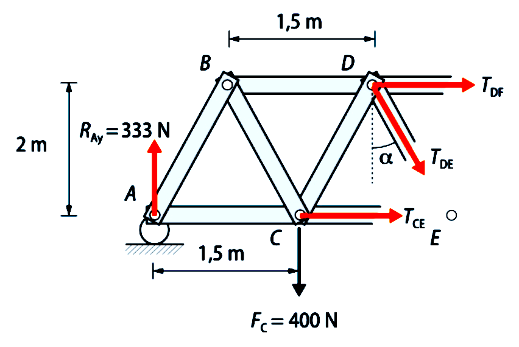

Método de las secciones (Ritter)
Se utiliza cuando queremos estudiar una barra en concreto y no la totalidad de la estructura.
Consiste en lo siguiente:
- Cortamos la estructura por una sección que intersecte tres barras.
- Eliminamos una de las dos partes en las que ha quedado dividida la estructura.
- Aplicamos en la otra parte las tres ecuaciones de equilibrio.
Ejemplo resueltoEmpleando el método de las secciones, o de Ritter, calcula las tensiones de las barras CE, ED y DF de la siguiente estructura de barras, donde A es un apoyo libre y G es un apoyo articulado.
Comprobamos la isostaticidad: Se trata de una estructura isostática exteriormente, ya que hay igual número de incógnitas (RAy, RGx, RGy) que de ecuaciones (\(\sum F_x = 0;\ \sum F_y = 0;\ \sum M = 0\)), y también es isostática interiormente, ya que el número de barras \( b = 11 = 2n-3 \) (siendo n el número de nudos: n = 7). Calculamos primero las reacciones con las ecuaciones de equilibrio de la estructura:
\[ \sum M_G = 0 \Rightarrow R_{Ay}\cdot 4{,}5 - 400\cdot 3 - 200\cdot 1{,}5 = 0 \Rightarrow R_{Ay} = 333{,}33\,\text{N} \] Con la suma de fuerzas verticales calculamos la reacción RGy: \[ \sum F_y = 0 \Rightarrow R_{Gy} = 600 - 333{,}33 = 266{,}66\,\text{N} \] Por último, la última reación, RGx, es claramente nula al ser la única fuerza horizontal: \[ \sum F_x = 0 \Rightarrow R_{Gx} = 0\,\text{N} \] A continuación realizamos la sección de la estructura por tres barras, tal y como se ve en la imagen:
Cogemos el lado izquierdo del corte, realizamos el diagrama de cuerpo libre y dibujamos las tensiones de las barras. Escogemos todas las tensiones como de tracción, es decir, salen del nudo. Si luego nos salen negativas, será que en realidad son de compresión: Ponemos la ecuación de momento nulo en el nudo E. Como las tensiones TCE y TDE pasan por él, no generan momento y nos las quitamos. Por lo tanto, podemos calcular directamente la tensión TDF: \[ \sum M_E = 0 \Rightarrow 333{,}33\cdot 3 - 400\cdot 1{,}5 + T_{DF}\cdot 2 \Rightarrow T_{DF} = -200\,\text{N} \] Como sale negativa, resulta que es un esfuerzo de compresión. Con el equilibrio de fuerzas en el eje vertical, podemos calcular la tensión TDE: \[ \sum F_y = 0 \Rightarrow R_{Ay} - F_C - T_{DE}\cos\alpha = 0\] El ángulo α lo podemos calcular fácilmente de la geometría de la estructura: \[\alpha = \tan^{-1}\!\left(\frac{0{,}75}{2}\right) = 20{,}55^\circ\] Por lo tanto: \[333{,}33 - 400 - T_{DE}\cos 20{,}55^\circ = 0 \Rightarrow T_{DE} = -71{,}20\,\text{N}\] De nuevo sale negativa, por lo que es un esfuerzo de compresión. Por último, con la suma de fuerzas horizontales obtenemos la tensión que nos falta, TCE: \[ \sum F_x = 0 \Rightarrow T_{CE} + T_{DF} + T_{DE}\, \sin 20{,}55^\circ = 0 \Rightarrow T_{CE} - 200 - 71{,}2\, \sin 20{,}55^\circ \Rightarrow T_{CE} = 224{,}99\,\text{N} \] En esta ocasión, al salir positiva, es un esfuerzo de tracción. |